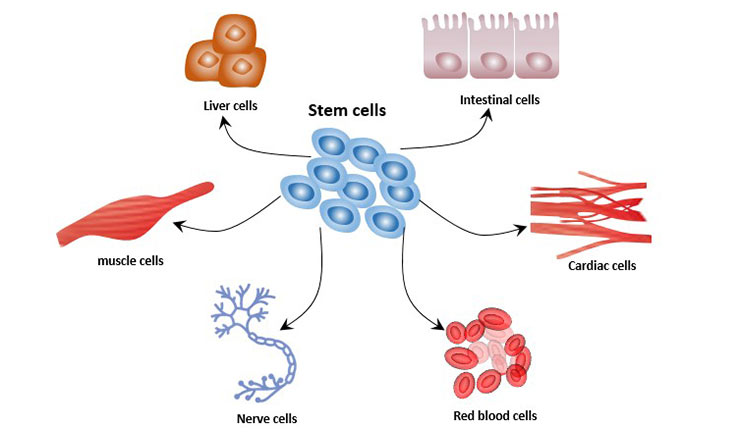
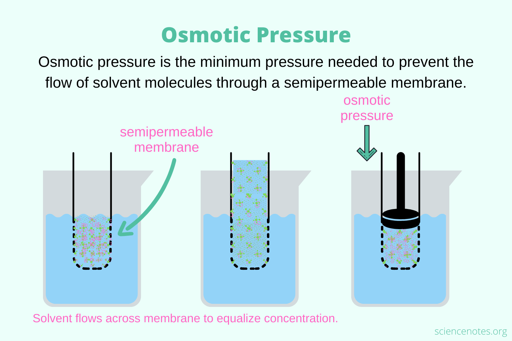

Circular DNA
No Nucleus
No Membrane Bound Organelles
Binary Fission
Single Cell organisms
Linear DNA
Nucleus
Membrane Bound Organelles
Mitosis/Meiosis
Stem cells differentiate into specialized cells based on which genes are activated
Nerve Cells: Carry electrical signals from the body to the brain
Blood Cells: Carry oxygen and nutrients around the body
Muscle Cells: Allow for movement
Sperm Cells: Carry genetic information for reproduction
If a cell needs to move materials from HIGH osmotic pressure to LOW osmetic pressure, no ATP is required. This is called Passive Transport. If a cell needs to move materials from LOW to HIGH, it needs ATP for Active Transport
A cell is Hypotponic if its salinity level is lower than the salinity level of the substance it is in. If it is higher, then its Hypertonic The cell will naturally try to reach an Isotonic equillibrium.
Some cells will mutate and form new structures for movement like flagella and cillia or photoreceptors like Eye Spots These mutations give the cells a survival advantage in their environment, which means their offspring will have a better chance of reproducing. This eventually leads to an almost universal aqcuisition of such useful traits.